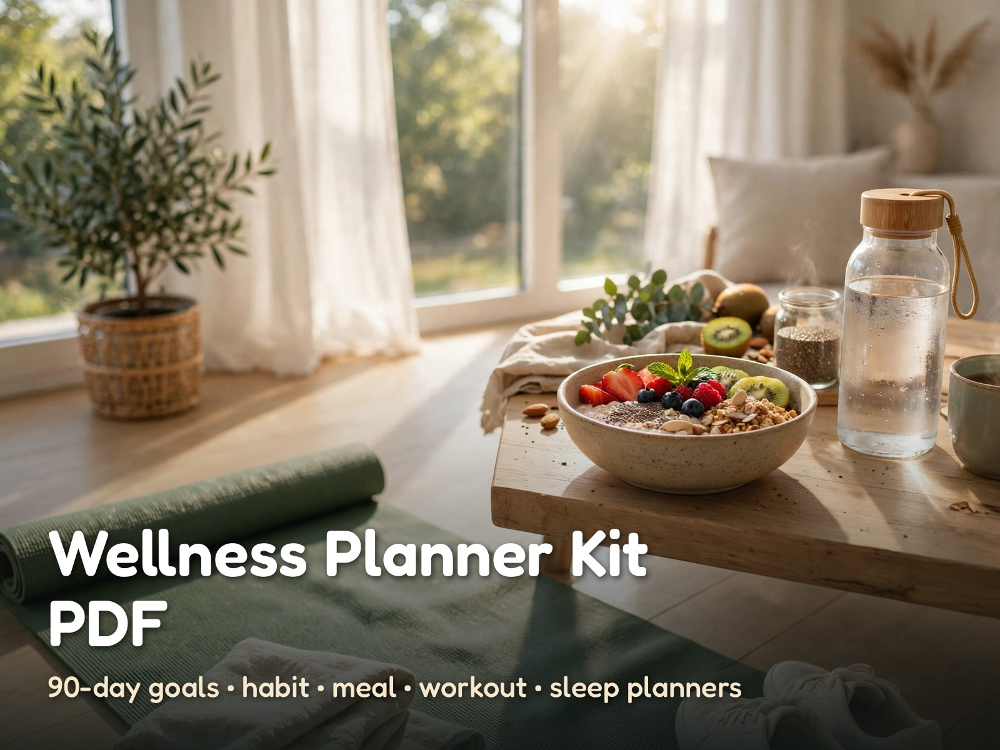

$15 USD — instant download
Wellness Planner Kit PDF — 90-Day Goals, Habit, Meal, Workout & Sleep Planners in One
Get it on GumroadMost planners fail because they are five disconnected tools — a habit app here, a meal plan there, a workout log somewhere else. This kit is one loop: goals set the month, the month shapes the weeks, the weeks are executed on daily pages, the logs record what actually happened, and the monthly review feeds it all back into better goals. Ninety days of goals, habits, meals, workouts and sleep in a single PDF system.
The 90-Day Goal Setter caps you at three goals, each written in a countable format with a bad-week minimum version and the page that will prove it happened. Monthly pages provide three Month-at-a-Glance planners and three Monthly Habit Trackers, with rules for choosing six habits that survive your worst week rather than impress your best one. Weekly pages include three Weekly Wellness Planners with pinch points and minimum versions decided in advance, a Weekly Meal Planner, a Grocery List and Pantry Staples sheet, and a Meal Ideas Bank of ten no-recipe dinners for the nights planning fails.
The Daily Page puts schedule, meals, water tick-boxes, movement and tonight's sleep plan on a single sheet. The workout system provides three Workout Log sheets of eight sessions each plus a training-week design guide — anchor sessions, hard/easy alternation, deload weeks, minimum-version workouts. The sleep system adds two weekly Sleep Logs and a Wind-Down Routine Builder with one choice per time block, repeated nightly. The Monthly Review is a 30-minute session that reads your logs and sets next month — keep one, shrink one, start one — and the Minimum Month mode pre-defines a smaller version of the whole system for the months when life happens.
This planner tracks behaviours — movement, meals, sleep, habits — and how you feel and function. It deliberately contains no weight targets and no before/after pages. It is a lifestyle-organization tool, not medical advice, a diet prescription or an exercise program, and not a treatment for any condition; if you are new to exercise or have a medical condition, check with a healthcare professional about what is appropriate for you. Every sheet is yours to print as often as you need, so one purchase covers quarter after quarter.
This is a digital download — no physical item will be shipped. For personal use; please do not redistribute or resell the file.